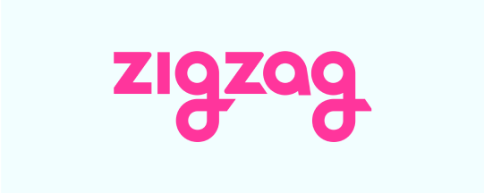
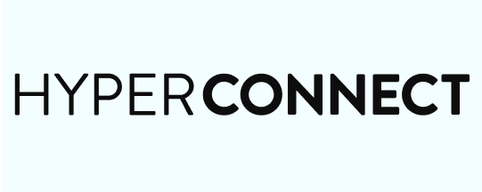
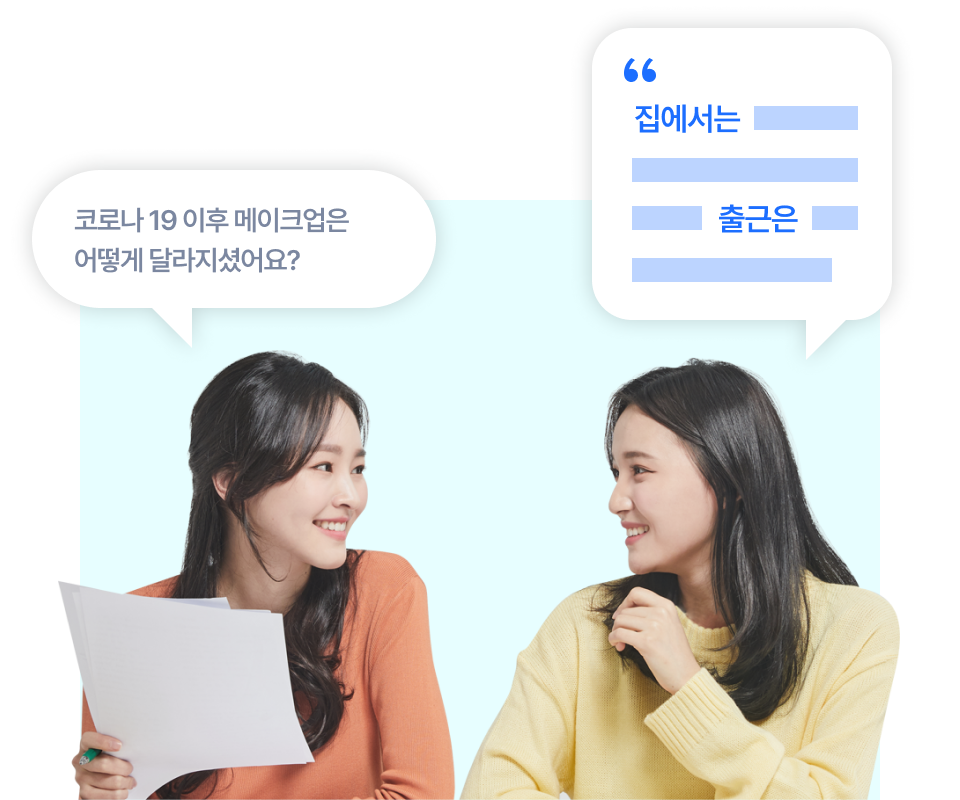
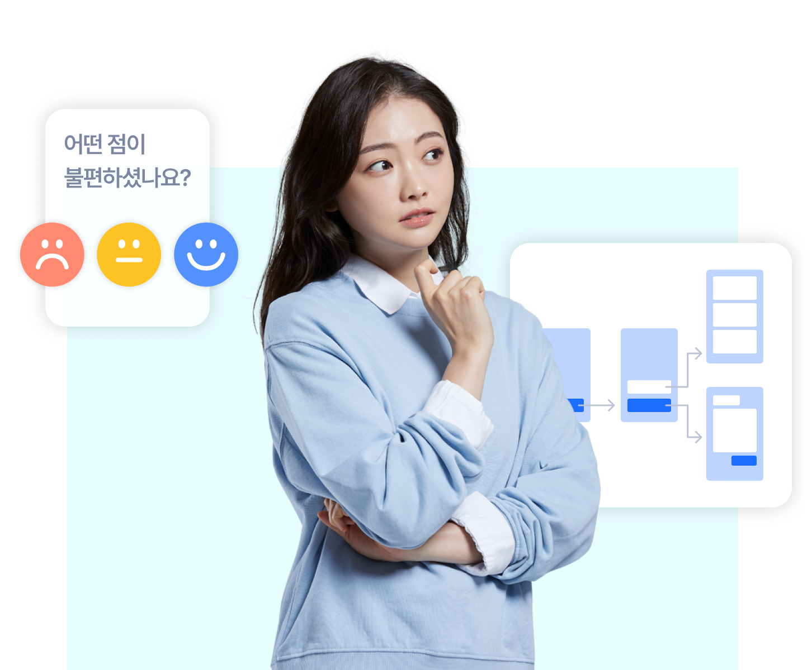
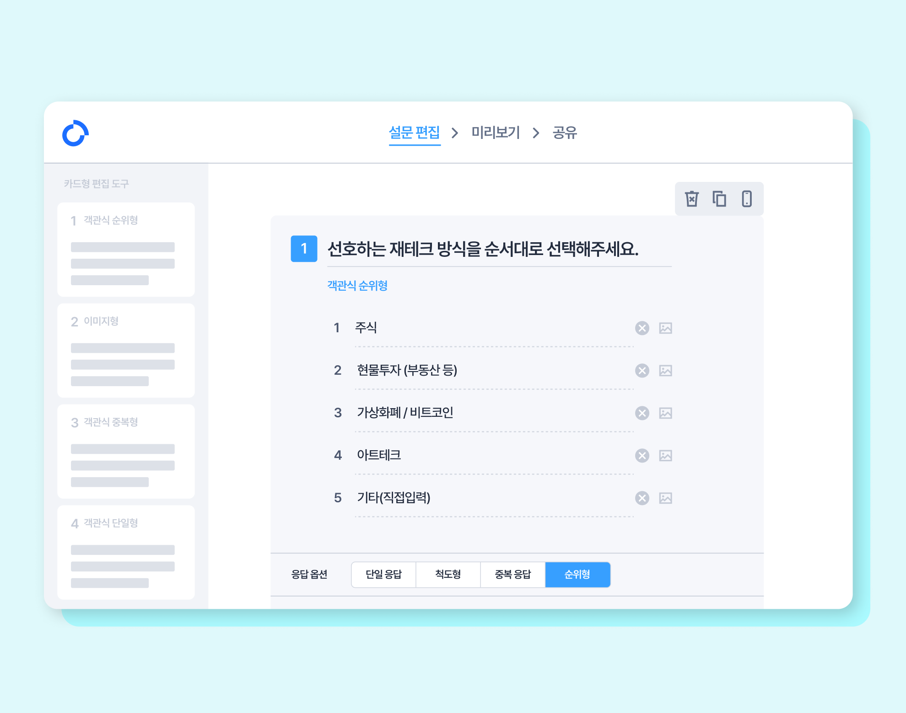

계속해서 변하는 시장을 파악하기 위해 빠른 소비자 데이터 수집과 분석은 필수 요소가 되었습니다. Ad-hoc조사부터 다이어리 조사와 FGD까지, 시장과 소비자에 대해 품고 있는 다양한 가설을 검증하기 위한 빠르고 정확한 전략이 바로 오픈서베이입니다.
- 
- 
복잡해진 시장과 소비자를 이해하기 위해서는 그에 맞는 새로운 방식이 필요합니다
-

- 
- 
-

기술을 통해 풍부하고 정확한 데이터를 수집하고 더 쉽고 빠르게 분석합니다

먹고, 사고, 시간을 보내는 소비자에 대한 오픈서베이의 오리지널 데이터를 만나보세요
더 알아보기-
트렌드 리포트
-
뷰티 카테고리 리포트
-
Eat & Buy 리포트
-

푸드 다이어리
-
카드 결제 기록
누적 기업 고객 수
2,047개 사
연간 프로젝트 수
2,436개
활성 패널 수
204,513개 사
시대를 앞서가는 기업이 오픈서베이와 함께 합니다
-
소비자시장전략본부
-
한국) Trend&Insight
오픈서베이는 항상 소비자의 시선으로 제품을 만들려는 저희의 노력을 잘 이해하는 파트너입니다.
국내 주요 조사업체 중 가장 빠르게 소비자 의견을 수집할 수 있으며, 함께 데이터 자산을 함께 쌓아가고 있어 더욱 든든합니다.
-
CX센터 프로덕트비저닝팀
애자일한 개발 문화를 가진 테크 조직이 데이터를 보는 방식은 달라야 합니다.
오픈서베이의 놀라운 속도와 데이터 퀄리티, 모바일 환경에 대한 이해는 우아한형제들이 더욱 더 나은 사용자 경험을 고민하고 멋진 프로덕을 만드는데 도움을 줍니다.
-
Brand platform team
차별화되고 시의성 있는 브랜드 경험을 설계하기 위해서는 빠르고 정확한 브랜드 진단이 필요합니다. 토스는 오픈서베이와 함께 보다 객관적인 지표를 확보하고, 정성적인 데이터를 수집을 통해 브랜드 진단을 하고 있습니다.
-
Brand platform team
차별화되고 시의성 있는 브랜드 경험을 설계하기 위해서는 빠르고 정확한 브랜드 진단이 필요합니다. 토스는 오픈서베이와 함께 보다 객관적인 지표를 확보하고, 정성적인 데이터를 수집을 통해 브랜드 진단을 하고 있습니다.
-
Brand platform team
차별화되고 시의성 있는 브랜드 경험을 설계하기 위해서는 빠르고 정확한 브랜드 진단이 필요합니다. 토스는 오픈서베이와 함께 보다 객관적인 지표를 확보하고, 정성적인 데이터를 수집을 통해 브랜드 진단을 하고 있습니다.